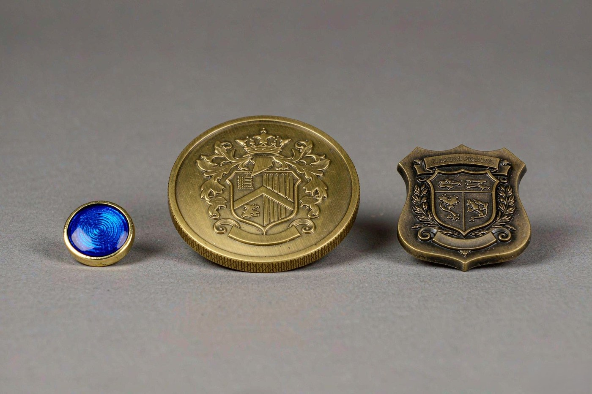
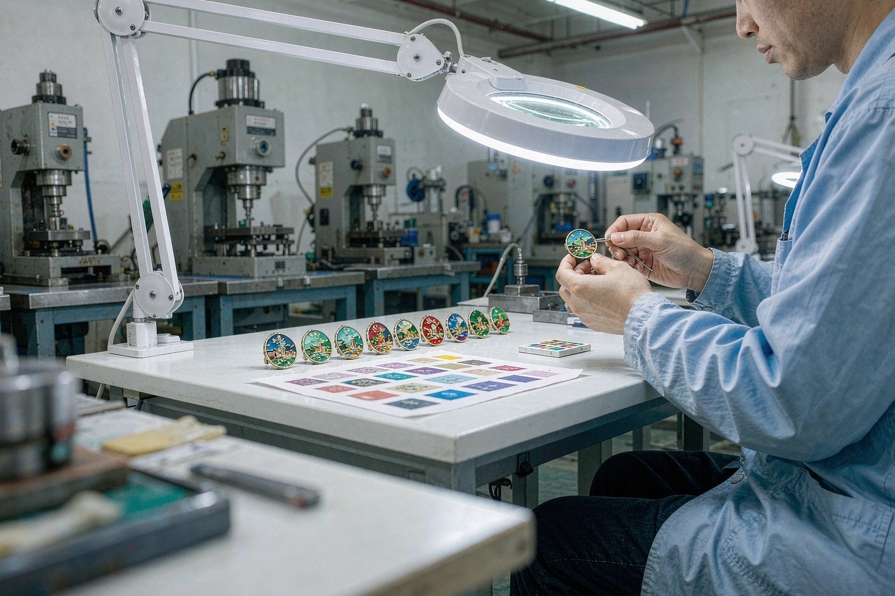
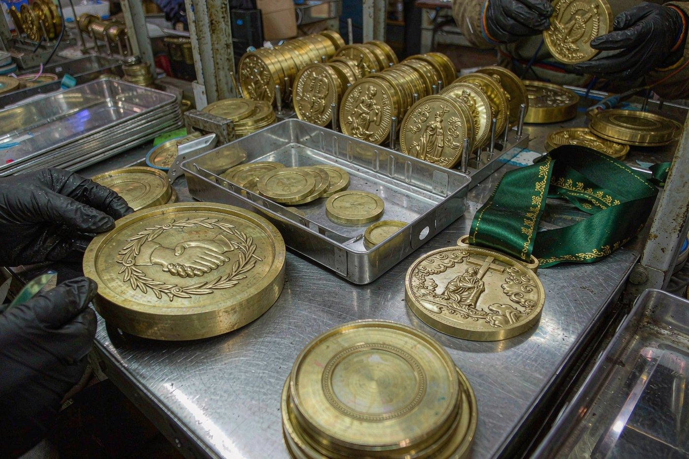

Most buyers do not arrive with a product in mind. They arrive with a programme: something for a conference, an anniversary, a school, a club, a service team, or a reseller who needs a range. The first question is usually what should I order, and it gets answered by guessing.
Guessing is expensive, because these three products are specified in completely different ways. A lapel pin is a graphic object that happens to be wearable. A challenge coin is a weight in the hand. A badge is a numbered record issued to a named person. Specifying the wrong one does not just give you the wrong object, it gives you the wrong mould, the wrong tooling decision and the wrong order pattern for next year.
So this is the comparison, in the order the decision actually gets made: what the piece has to do, then what it can carry, then how it is worn or fixed, then how it repeats.

The three side by side
Before the details, the whole comparison on one page. If your programme matches a row, you have your answer; if it does not, keep reading.
| Point | Lapel pin | Challenge coin | Metal badge |
|---|---|---|---|
| Typical size | 14 mm to 60 mm, almost always round | 44 mm to 80 mm | 20 mm to 60 mm, often rectangular |
| What it is | A graphic object that happens to be wearable | A struck disc with relief on both faces | An issued item, often numbered or named |
| Text on the face | Short text only, and often curved | Room for a design on both faces and a rim | Names, roles and numbers are common |
| Personalisation | Not usually personalised | Not personalised; the design is the record | Engraved names and sequential numbering |
| Fixing | Butterfly clutch is the standard | Optional coin holder, or a hole for a lanyard | Magnet, screw back or brooch is common |
| Order pattern | One programme, one order | A recognition award, usually a single run per event | Sets, often replaced on a yearly cycle |
| Repeat tooling | Usually a one-off programme | The mould is reused if the same event recurs | The mould is reused every year, so it is worth specifying carefully |
Two things in that table decide more orders than anything else. The first is personalisation: if each piece has to carry a different name or number, you are ordering a badge, not a pin. The second is order pattern: if the item comes back every year, the mould is a recurring cost worth getting right, and the specification has to survive the second year, not just the first.
Lapel pin: one person, one programme
A lapel pin is worn. It goes on a shirt, a jacket, a polo, and it stays there for the length of a programme or an event. That single fact drives almost every specification choice.
It has to be light enough to wear all day without pulling at the fabric, small enough to sit on a lapel without looking like a badge, and graphic enough that the design reads at 25 mm across. It runs from 14 mm, roughly half an inch, upward. Below 18 mm the artwork has to be simplified, because fine detail and thin metal lines do not hold at that scale. The lapel pin size guide covers what each diameter can carry.
The word on the face is usually short, because a round shape with a curve in it leaves little room for words that are meant to be read at a glance. If your design needs a paragraph on it, you are looking at the wrong product.
The fixing is a butterfly clutch with a rubber cap, and it is the default on every pin we make. For heavier designs the clutch is chosen against the fabric and the weight, and a safety pin, screw back, magnetic back or double clutch is available instead. All five are set out on the lapel pin backings page.

Challenge coin: weight, and something to keep
A challenge coin is not worn. It is handed out and then kept, put on a desk, left in a drawer, carried in a pocket for years. The specification follows from that: it is struck in solid brass, iron or zinc alloy with a real relief on both faces and a milled edge that catches the light as it turns.
It is the heaviest item we run, and that weight is exactly what buyers are paying for. The coin starts at 44 mm, about 1.75 inches, and runs to 80 mm. The edge can be diamond-cut, rope-edge or plain milled. Relief depth reaches 3.0 mm on the struck face, and the base metal is either 0.3 mm brass with 2.0 mm to 6.0 mm of relief, or solid zinc alloy. Full detail is on the challenge coins and metal swag page, and the size logic is in the challenge coin size guide.
If the award has to hang from a ribbon rather than sit in a pocket, that is a finisher medal rather than a coin: a medal body on the same line, finished with a full colour sublimated ribbon in 25 mm, 38 mm or 50 mm, so the year, the event name and the company mark all read at a glance.

Metal badge: issued to a named person
A badge is the third thing, and it is the one most often confused with a pin. The distinction is organisational rather than visual. A pin is worn by one person for one programme. A badge is issued by an organisation, often in numbered sets, often with names on them, and often replaced every year.
That difference changes the specification completely. Six standard badge families cover most use: the round service badge, the shield, the rectangular name badge, the enamel organisation badge, the military and heritage badge, and a rubber or PVC badge for events and outdoor use where metal would be too heavy or too easy to scratch.
The rectangular name badge is the clearest example. It is specified at 55 mm to 70 mm by 20 mm to 30 mm, usually issued in sets, often with a photograph panel, and it carries engraved names and sequential numbers. The fixing is usually a magnet, a safety pin or adhesive, because a badge is carried rather than worn against a collar.
The one thing to decide carefully is the mould, because for a badge the mould is reused every year. It is worth specifying carefully at the start rather than re-tooling a design you are about to reorder. The metal badges page lists all six families with their sizes, processes and fixings.
Where the three overlap, and where they do not
The processes overlap almost completely. Hard enamel, soft enamel, die struck, 3D die cast and offset printed all run on the same equipment, and the choice among them follows from the artwork rather than from the product. A die struck badge and a die struck pin are made the same way. The five-process comparison sets out depth, minimum line width, colour count, tooling and lead time for each one.
What does not overlap is the order logic. A badge is specified around a set with variations in it. A pin is specified around a single design. A coin is specified around an event. If you are running all three in the same programme, say so in the enquiry rather than ordering them as three unrelated projects, because the schedule, the inspection and the shipment are handled as one.
The part that does not change between the three
Whichever product you choose, the material rules are the same, because all three come off the same plating line. Every plated rack is XRF tested before it moves to the next bench, which is how a finish is confirmed lead-free rather than assumed to be. That matters most where the finished piece is intended for children or for the general public: the US Consumer Product Safety Commission sets the total lead content limit for children's products and the testing regime behind it, and any buyer with a compliance obligation should know the number exists before the order is placed, not after. The CPSC guidance on lead in children's products sets out the limit and the testing that supports it.
For European destinations the requirement runs through REACH, which covers substances of very high concern in articles placed on the EU market. A metal badge reaching a European buyer is an article, and the plating chemistry and any surface treatment are within scope, so the same declaration covers a coin, a badge or a pin. The REACH regulation on the EUR-Lex legal database is the text that applies. Telling us the destination country at enquiry is enough for us to route the documentation correctly.
Three questions that settle it
If the table has not done it, these three will. Answer them in order.
Does each piece need to carry a different name or number?
Then it is a badge. Engraved names and sequential numbering are a badge specification, and they change the tooling and the order pattern. A lapel pin or a coin carries one design for every piece.
Is the piece meant to be worn against clothing, or kept?
Worn means a lapel pin: light, small, graphic, a butterfly clutch. Kept means a challenge coin or a medal: heavy, two-sided, with a milled edge, and it has to earn the metal it uses.
Does the item come back every year?
Then it is a badge, and the mould is a recurring decision. Specify it once, carefully, with an eye on the second order. If it is a single programme, a pin is usually the simplest thing that does the job.
And if the programme is a merchandise range rather than one of the three, the answer is often more than one product. Keychains are made from the same pin bodies, so they are the easiest item to add to an existing pin order. Medals, belt buckles and cufflinks and tie bars sit on the same line and the same schedule.
What to send when you ask
You do not need to have decided between the three before you write. Send what you have and the specification follows.
- The design, as artwork, a photograph of an existing badge or coin, or a logo file. Twelve in-house designers redraw from whatever arrives, and that work is folded into the CAD proof you approve before anything is cut.
- The shape and size, or the closest existing example you can send us. If you are unsure of the size, say what the piece has to do and we will recommend the diameter.
- The quantity, including how many different names or numbers are involved if it is a badge.
- The finish, from the twelve plating options, and the colour count if the piece carries enamel.
- The fixing, and whether the piece is worn, carried or displayed.
- The deadline, and whether it is a fixed event date or a rolling replacement cycle.
Send the artwork, the quantity and the delivery date and you get a 2D and 3D CAD proof with an itemised quotation within 12 hours, with no minimum order quantity applying at any stage. The design file specifications page covers what we can cut from and the limits our CAD team checks first.
Questions buyers ask about choosing between them
Yes. They run on the same presses, the same plating line and the same inspection bench, so a merchandise programme can cover more than one product in one schedule. The keychains are made from the same pin bodies, which is why they are the easiest item to add to an existing pin order. Moulds are cut per design, so each product still has its own tooling, but the order, the inspection and the shipment are one.
A challenge coin, because it is heavier and carries more metal. Coins are struck in solid brass, iron or zinc alloy with relief on both faces and a milled edge, and they run from 44 mm to 80 mm. A lapel pin runs from 14 mm to 60 mm. What decides the quotation is the metal, the size, the process, the number of colours and the quantity, so the comparison is made against a specification rather than a single number.
A lapel pin is worn by one person for one programme, almost always round, with short text and a butterfly clutch. A badge is issued by an organisation, often in numbered sets, often with names on them, and often replaced every year. That difference changes the specification: a badge is specified around sequential numbering, engraved names and a yearly repeat order, while a pin is specified around one design and one run.
Yes, and that is the main reason to order a badge rather than a pin. Rectangular name badges are specified with engraved names and sequential numbers, and organisation badges are produced in numbered sets. Send the design, the quantity, the number of different names involved and the deadline, and the specification follows from that.
All three can be scheduled to a date, but they differ in what has to happen first. Medals and keychains run 7 to 10 business days after sample approval, belt buckles 10 to 14 business days, and the four main pin processes run 7 to 10 business days. Offset printed pins run 5 to 7 business days, the shortest lead time we run. Fixed event dates are the reason to start the sample stage early rather than to choose a different product.
No. There is no minimum order quantity at any stage, so a single piece is a legitimate sample order. Larger quantities can be split across deliveries if that suits your stock planning, and different sizes of the same design can be scheduled in one run because they often share a mould.
They run on the same licensed plating line, so the twelve finishes apply across the range. Every rack is XRF tested to confirm the finish is lead-free before it reaches the next bench, and the colour is matched rack to rack against the standard panel.